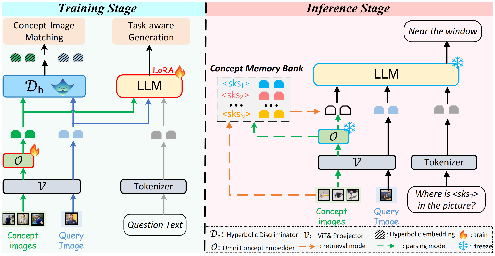

Zhuoyun Du 「杜卓耘」

I am a second-year master's student in Computer Science at Zhejiang University. I currently work with Prof. Wei Chen at ZJUVAI within the State Key Laboratory of CAD&CG. I am also interning with the Taowise team at Alibaba.
Previously, I received my Bachelor's degree in computer science at Jinan University, Guangzhou. I also serve as a research assistant on the
ChatDev project  in the
Dept. of CS&T, Tsinghua University,
advised by Prof. Zhiyuan Liu and
Prof. Chen Qian at
THUNLP.
in the
Dept. of CS&T, Tsinghua University,
advised by Prof. Zhiyuan Liu and
Prof. Chen Qian at
THUNLP.
Open to collaborations!
Drop me an email!
Research Focus: Designing LLM-based autonomous agents that collaborate effectively to tackle complex tasks. My recent work spans software-development agents, self-evolution, and latent-space reasoning/communication.
News & Timeline
- [2025.11.25] Introducing a training-free framework for scalable personalized vision-language models via online concept learning in hyperbolic space, available at Online-PVLM.
- [2025.11.12] Our work that enables direct and efficient inter-agent communication entirely in latent space, achieving higher task success with up to effective compression is available at Interlat.
- [2025.10.24] EvoPatient open-sourced!
- [2025.8.22] Our work on pluggable RL process supervision framework that enables fine-grained optimization of each reasoning step is available at SSPO.
- [2025.5.16] Two papers accepted at ACL 2025 - exploring cross-team collaboration and medical education applications!
- [2024.12.16] Scaling Large-Language-Model-based Multi-Agent Collaboration accepted at ICLR 2025!
- [2024.12.16] Introducing EvoPatient: Transforming LLMs into Standardized Patients for medical education. arXiv:2412.11716
- [2024.9.26] Paper on collaborative agents under information asymmetry accepted at NeurIPS 2024!
- [2024.6.25] Launch of our Interactive E-book on Multi-Agent Collaboration
- [2024.5.16] Two papers accepted at ACL 2024 main conference.
- [2023.8.29] ChatDev open-sourced! Now with stars!
Selected Publications
(* denotes equal contribution)

Online-PVLM: Advancing Personalized VLMs with Online Concept Learning
@article{bai2025onlinepvlm,
title={Online-PVLM: Advancing Personalized VLMs with Online Concept Learning},
author={Bai, Huiyu and Wang, Runze and Du, Zhuoyun, et al.},
journal={arXiv preprint arXiv:2511.20056},
year={2025}
}

Enabling Agents to Communicate Entirely in Latent Space
@article{du2025interlat,
title={Enabling Agents to Communicate Entirely in Latent Space},
author={Du, Zhuoyun and Wang, Runze and Bai, Huiyu, et al.},
journal={arXiv preprint arXiv:2511.09149},
year={2025}
}

SSPO: Self-traced Step-wise Preference Optimization
@article{xu2025sspo,
title={SSPO: Self-traced Step-wise Preference Optimization},
author={Xu, Yuyang and Cheng, Yi and Ying, Haochao and Du, Zhuoyun, et al.},
journal={arXiv preprint arXiv:2508.12604},
year={2025}
}

LLMs Can Simulate Standardized Patients via Agent Coevolution
@article{du2024evopatient,
title={LLMs Can Simulate Standardized Patients via Agent Coevolution},
author={Du, Zhuoyun and Zheng, Lujie and Hu, Renjun, et al.},
journal={arXiv preprint arXiv:2412.11716},
year={2024}
}

Multi-Agent Collaboration via Cross-Team Orchestration
@article{du2024crossteam,
title={Multi-Agent Software Development through Cross-Team Collaboration},
author={Du, Zhuoyun and Qian, Chen and Liu, Wei, et al.},
journal={arXiv preprint arXiv:2406.08979},
year={2024}
}

Scaling Large-Language-Model-based Multi-Agent Collaboration
@article{qian2024scaling,
title={Scaling Large-Language-Model-based Multi-Agent Collaboration},
author={Qian, Chen and Xie, Zihao and Wang, Yifei, et al.},
journal={arXiv preprint arXiv:2406.07155},
year={2024}
}

Autonomous Agents for Collaborative Task under Information Asymmetry
@article{liu2024autonomous,
title={Autonomous Agents for Collaborative Task under Information Asymmetry},
author={Liu, Wei and Wang, Chenxi and Wang, Yifei, et al.},
journal={arXiv preprint arXiv:2406.14928},
year={2024}
}
Experience
Taowise @ Taotian (Alibaba Group)
Focusing on research on new paradigm in multi-agent latent space reasoning/communication enhancement and supervised fine-tuning (SFT) methodologies for LLMs. Working on advanced AI applications in e-commerce.
THUNLP @ Tsinghua University
Deeply involved in the development of the ChatDev project and related works, focusing on multi-agent cross-team collaboration.
Projects

Multi-Agent Research Interactive E-book
A comprehensive collection of research papers on LLM-based multi-agent systems presented in an interactive e-book format.
Website DatasetChatDev & Croto & MACNET
Actively contributed to ChatDev and led key branches (Croto) focusing on collaboration network topology.
Awards & Honors
- National Scholarship, 2025 (Top 0.2%)
- Outstanding Student Scholarship, 2025
- First-Class Scholarship, 2024 (Outstanding Graduate Student)
- Second-Class Scholarship, 2023 & 2022
Service
Program Committee / Reviewer: NeurIPS 2025, ICLR 2026
Talks & Presentations
Exchange-of-Thought: Enhancing Large Language Model Capabilities through Cross-Model Communication
Misc
Sports: Soccer, Fencing, Snowboarding, Billiards, Badminton
Music & Hobbies: Piano, Guitar (Beginner), Photography, Reading, Physics
Visit my personal blog for more.